El papa León catorce saluda a bordo de un vehículo durante el inicio de su visita oficial a Perú, donde sostendrá una reunión protocolar en el Palacio de Gobierno de Lima.
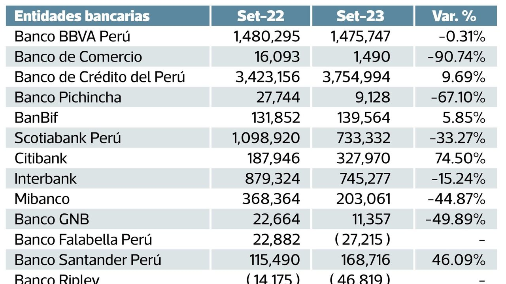
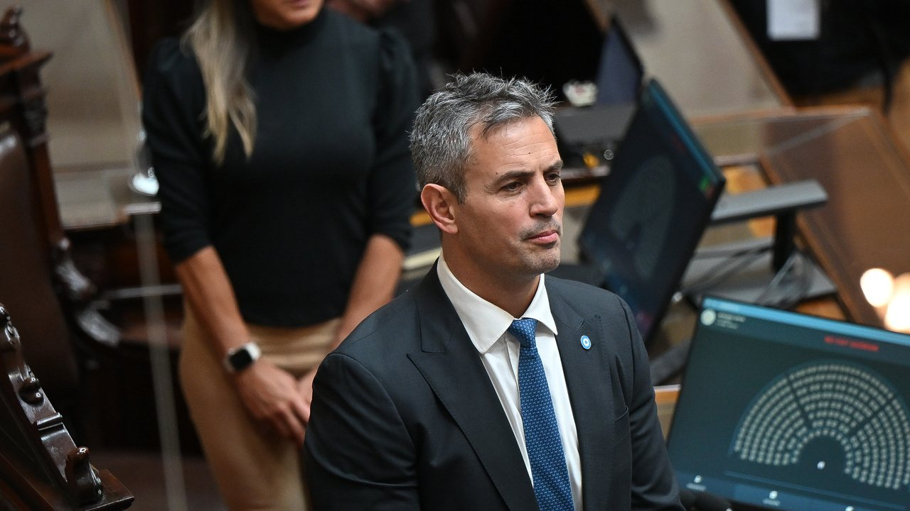
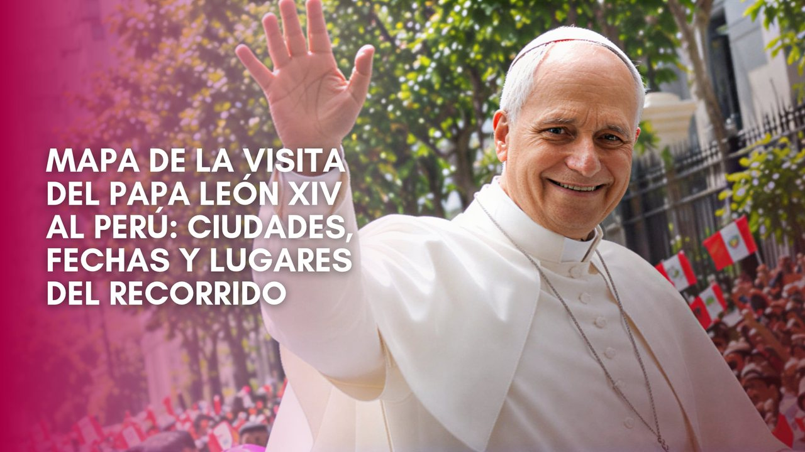

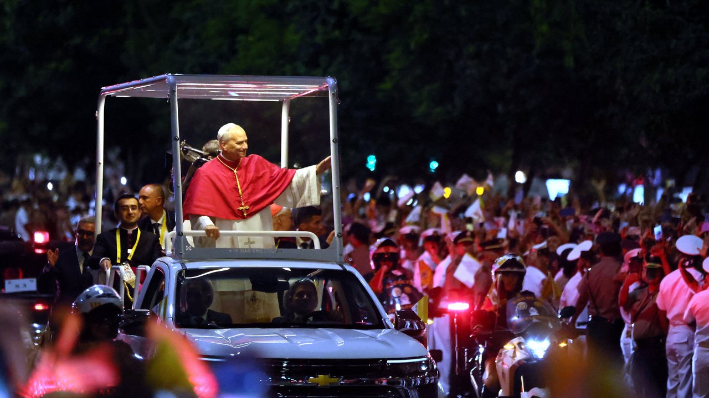
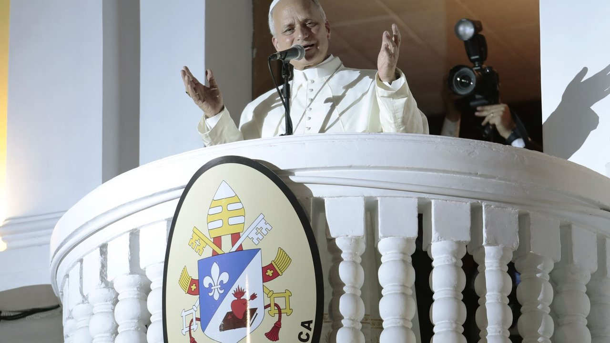
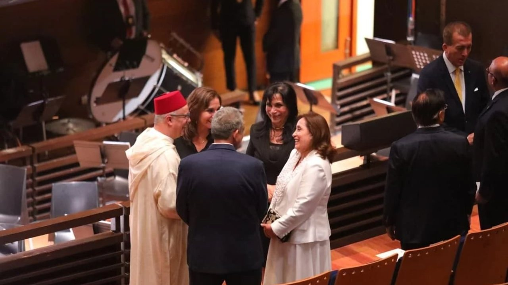
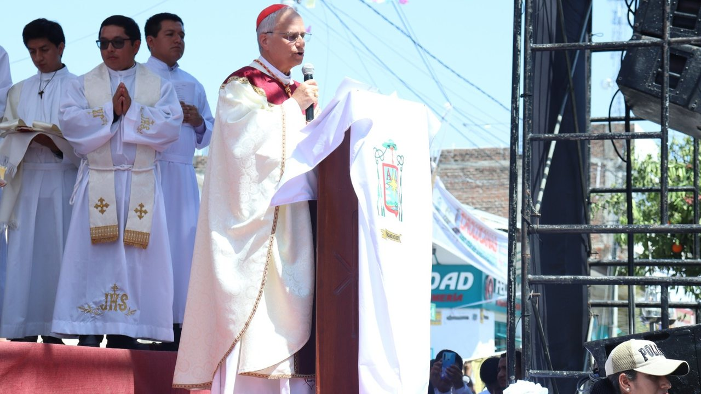
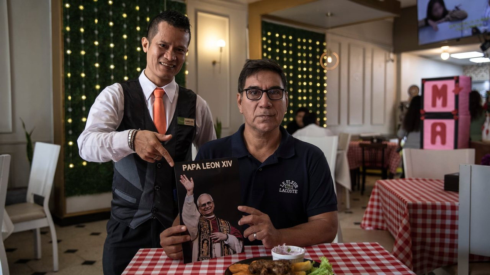
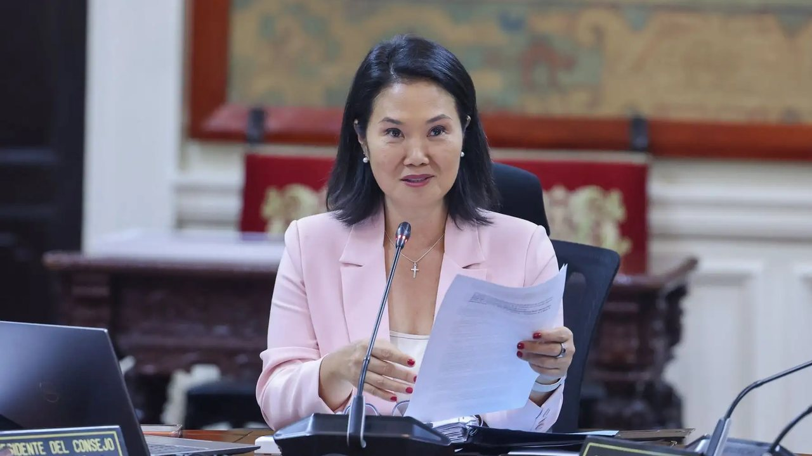
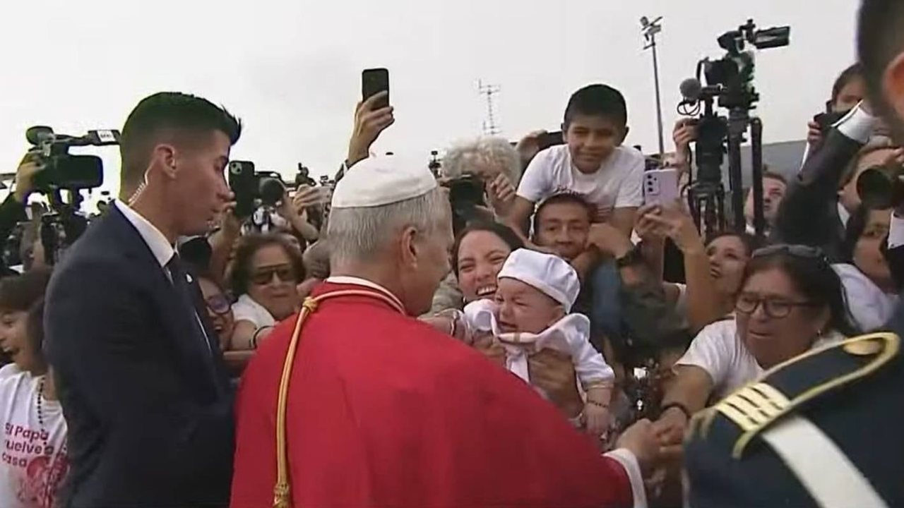
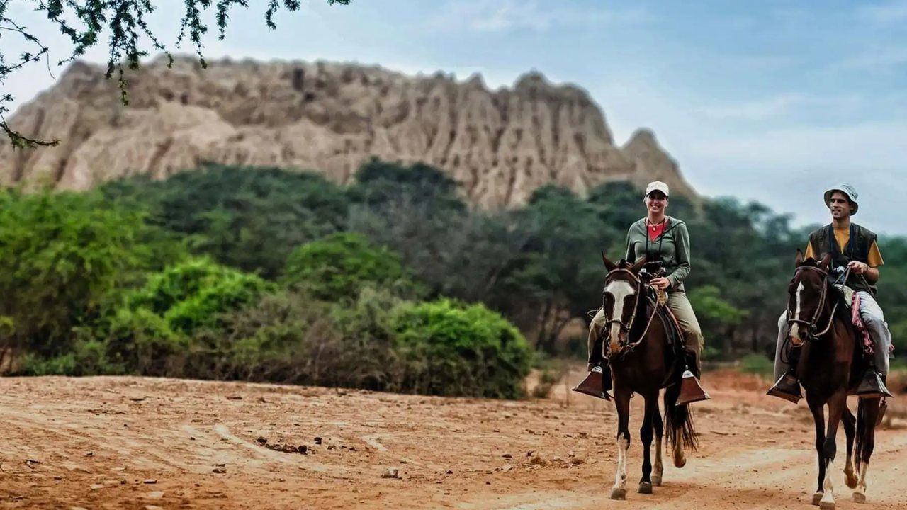
El papa León catorce saluda a bordo de un vehículo durante el inicio de su visita oficial a Perú, donde sostendrá una reunión protocolar en el Palacio de Gobierno de Lima.
El papa León catorce cumple una nutrida agenda en Lima este jueves 12 de noviembre. El papa León catorce arribó al Perú desde Argentina este 11 de noviembre. El papa León catorce durante un balconazo desde la Nunciatura al finalizar su primer día en el Perú.
Nvidia sufre las consecuencias del escándalo de Jensen Huang, su director ejecutivo. Jensen Huang, el CEO de Nvidia, se encuentra en medio de una inédita polémica que no solo compromete a su familia, sino también a la seguridad de la empresa que fundó, e incluso la de Estados Unidos.
A junio último, el incremento de las ganancias de la banca fue de 20 por ciento y un año antes, 43 por ciento. “Sobre todo es precaución, es previsión ante lo que va a ser el desenlace del fenómeno de El Niño”, añadió.
Debido a los trabajos de mantenimiento, el puente Isaías Garrido, conocido como puente Viejo, permanecerá restringido al tránsito desde el jueves 12 hasta el próximo 17, así lo informó la Municipalidad Provincial de Sullana. PUEDES VER: Autoridades encuentran a una menor trabajando en un bar en Sullana.
Andrea San Martín reapareció en redes sociales y reveló que atraviesa un momento emocional difícil por no poder ver a su hija menor.
"Creo que vamos a poder llegar a suspender las PASO", pronosticó el diputado, quien anticipó que habrá sesiones extraordinarias. El presidente de la Cámara de Diputados, Martín Menem. En ese marco, el diputado por La Libertad Avanza recordó: "En 2025 hemos sido capaces de suspender las PASO.
Respondió sobre dejar 'La Verde' en la previa del amistoso contra Perú Carlos Lampe ha jugado la Copa América y Eliminatorias con Bolivia. Este viernes, Perú juega contra Bolivia en el Estadio Alejandro Villanueva en el marco de un amistoso internacional 2026 por la fecha FIFA de noviembre.
Cientos de personas esperaban en los exteriores del Gran Teatro Nacional, en San Borja, la llegada del papa León catorce, donde se desarrollaría una de las actividades de su gira por Sudamérica. El papa León catorce es trasladado desde el centro de Lima hacia el Gran Teatro Nacional.
Cada edición dura menos de dos minutos. En la web tienes el resumen de cada historia y el enlace directo al medio original para leerla completa.
Conoce Olfatecho →